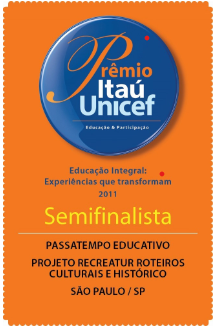

Somos uma organização não governamental, sem fins lucrativos, que desenvolve projetos na área educacional, cultural e preservação ambiental. A Entidade é qualificada pelo Ministério da Justiça do Brasil como OSCIP (Organização da Sociedade Civil de Interesse Público).
A ONG foi criada há 21 anos e atende crianças e jovens de 22 escolas públicas com atividades de incentivo à leitura, teatros de educação ambiental, matemática divertida, jogos de tabuleiro que ensinam história e geografia, são alguns dos projetos que são suporte didático para professores.
Passatempo EducativoO maior e melhor curso de aprendizagem profissional na área de turismo e recreação do Brasil.
Um projeto que oferece formação profissional e humanística para os jovens. Um curso que se destaca pela inovação, criatividade, unindo o poder de desenvolvimento das habilidades individuais e vontade de aprender das juventudes brasileiras.
Um curso prático em que o participante aprende a elaboração e planejamento de atividades recreativas pedagógicas e monitoria em turismo lúdico com a criação de roteiros e espaços educativos.
A versão online é realizado em parceria com o Programa de Braços Abertos do Ministério do Turismo, um programa do Governo Federal, que capacita jovens para o atendimento ao turista.
No ano de 2011 o Projeto Recreatur foi contemplada como finalista regional e semifinalista Nacional no prêmio Itaú-Unicef, como uma entidade que apoia e valoriza projetos que promovem a educação integral do ser humano, através da parceria escola - ONGs.

O Projeto Recreatur é um curso de capacitação na área da recreação e do turismo, para jovens do ensino médio da rede pública.
Realizado nas cidades de São Paulo, Cotia e Campos do Jordão.
A cada ano é escolhido um tema com base na indicação de temas anuais da UNESCO.
Confira abaixo fotos e temas desenvolvidos em cada ano.